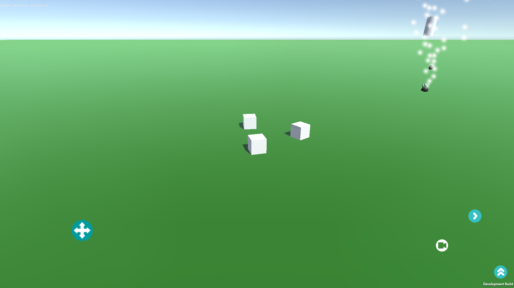
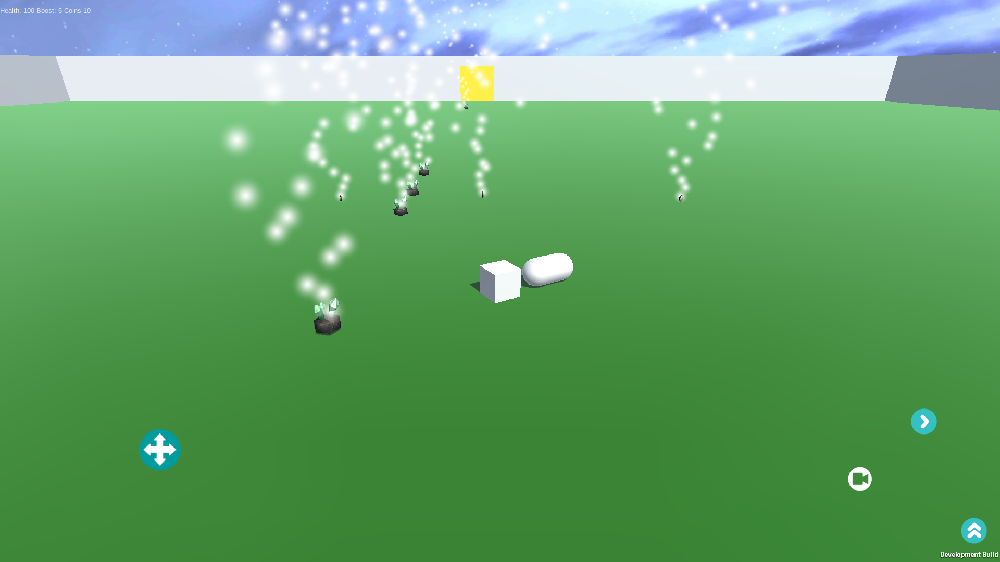

In my Freetime...
I have a wide range of experience developing games with different programs such as unreal and flash but lately I've been using Unity for it's portabilty. I've learned about using gyroscopic controls, vitual reality for mobile devices, and general game development concepts.
The link below is a prototype of my latest Unity 5.0 project
The game begins by allowing the player to fly a cube through 3D space. The goal of the game is to use the boost button to destroy the randomly generated capsules and collect the boost gems and coins they drop. Going through the floating rectangle will bring you to the next phase of the game.
 Show Scene
Show Scene
In this scene the player controls a cube on the ground fighting other cubes that jump at the player. If the player dies or if they press the button at the top of the screen it will lead them to the next part of the game. This was the toughest scene to program, I had some challenges getting the virtual joystick to rotate the player correctly and getting the weapon capsule and sphere to correctly follow the player without interfering with the player's model.
 Show Scene 2The last scene is simply a playground for the player to interact with the items they've collected and by going though the rectangle, the player will be returned to the original scene.
 Show Scene 3